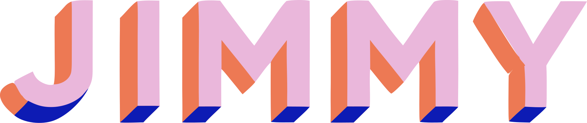
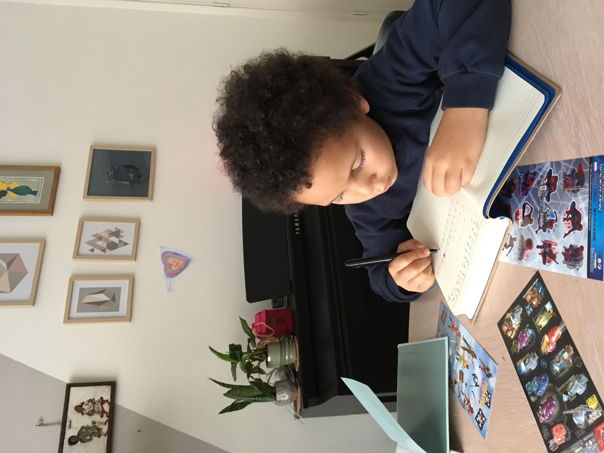
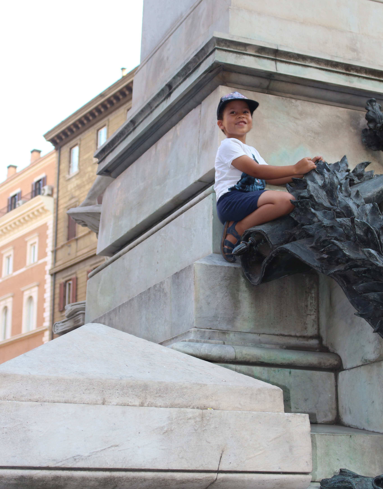
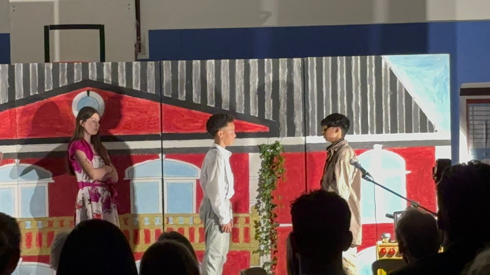
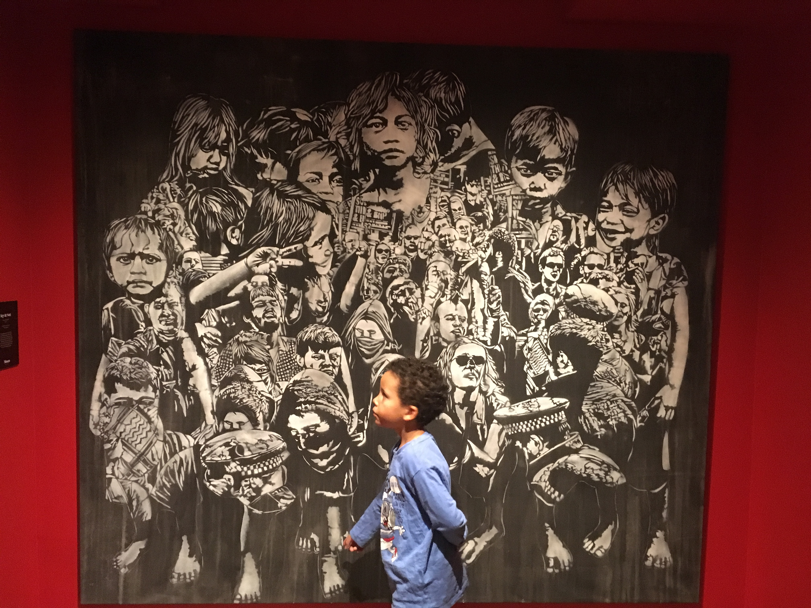
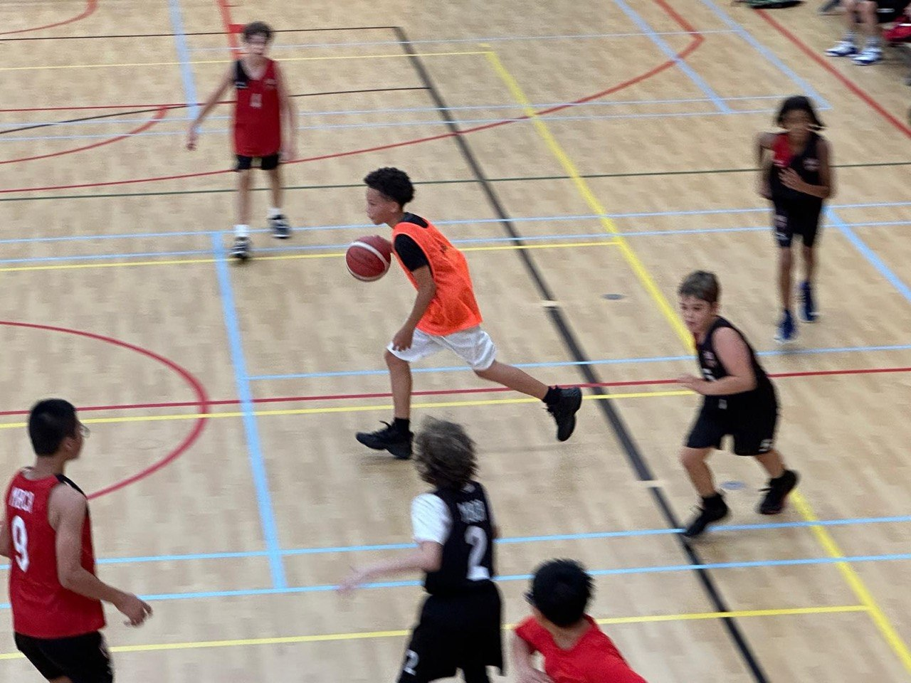
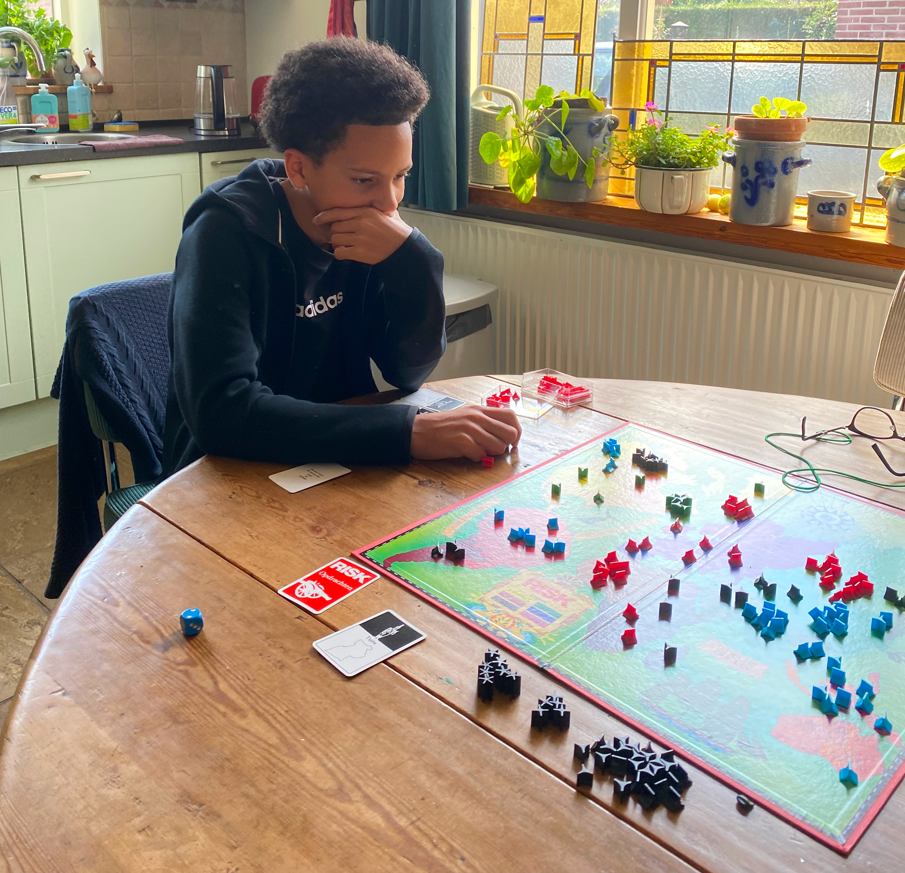
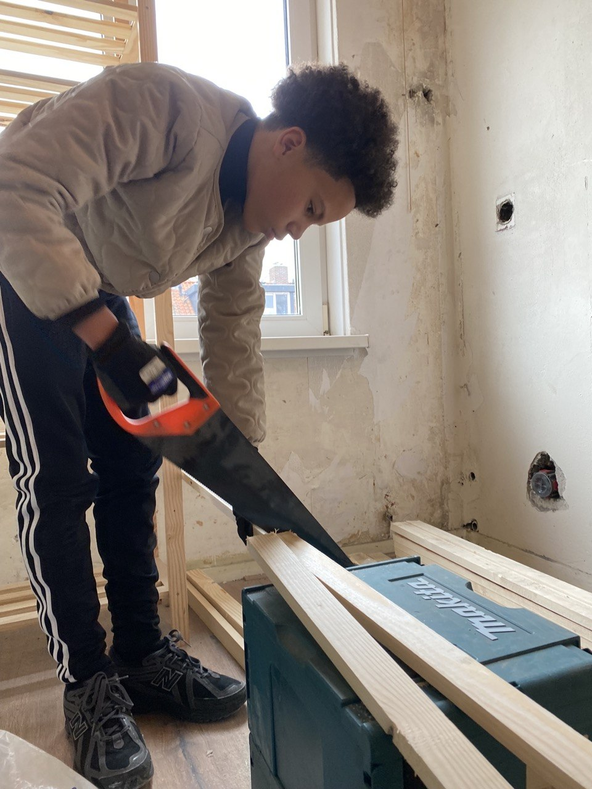

5 jaar · WPPSI-III
Patronen zien
Op alles wat je zelf moet doen: patronen naleggen, blokken rangschikken, redeneren. Je scoorde zeer begaafd. Taal was gemiddeld. Die kloof zat er al vroeg in.
Start
Hier vind je scholen, een plan om sterker te worden op school en beroepen om te ontdekken wat je interessant vindt.
Omdat het nu meivakantie is, gebruiken we dit ook om rustig vooruit te kijken naar het nieuwe schooljaar.
Voor nu; niet alles tegelijk.

Jouw brein
Drie tests, op drie verschillende momenten. Ze meten niet hetzelfde, en dat is precies waarom ze samen pas echt iets zeggen.
5 jaar · WPPSI-III
Op alles wat je zelf moet doen: patronen naleggen, blokken rangschikken, redeneren. Je scoorde zeer begaafd. Taal was gemiddeld. Die kloof zat er al vroeg in.
6 jaar · SON-R · Hoogst meetbaar
Een volledig non-verbale test: geen taal, alleen denken. Score: 145+, het maximum dat de test kan meten. Analogieën: 19 van 19. Toen taal wegviel, zat je tegen het plafond.
13 jaar · NIO · Groepstest op school
Veel taal, klassikaal, één ochtend in Vleuten. Rekenen: 119. Dat is hoog. Taal: 95. Gemiddeld. Dit meet niet hoe slim je bent, maar hoe school nu aanvoelt.
In het onderzoek op je 6e merkten de onderzoekers iets op:
terwijl je elke opdracht goed maakte, zei je de hele tijd dat je het niet kon.
Je pakte de puzzels op, je loste ze op,
en ondertussen geloofde je dat je faalde.
Dat verschil tussen wat je doet en wat je denkt dat je doet:
dat is het belangrijkste om over jezelf te weten.
Nu op school zie je dat ook terug.
Sommige vakken gaan min of meer vanzelf.
Maar andere vragen iets wat lastiger is dan het werk zelf:
eerder beginnen, vaker proberen, ook als je niet zeker weet of het goed wordt.
Wiskunde de dag voor een toets leren werkt soms,
maar het gaat beter met kleine stukjes, eerder in de week.
Niet omdat je meer nodig hebt dan je hebt.
Maar omdat wat je erin stopt, ook echt bepaalt wat je eruit haalt.
Niet iedereen leert op dezelfde manier. Dit is wat bij jou past, niet als verplichting maar als informatie.
Technische dingen, systemen, verbanden: die pik je snel op. Je hebt geen lange uitleg nodig. Je ziet hoe iets werkt en dan klopt het gewoon.
Losse feiten onthoud je minder goed. Maar als er een verhaal omheen zit, wie, waarom en wat er daarna gebeurde, blijft het hangen. Geschiedenis werkt daarom zo goed.
Beginnen is soms het zwaarste deel, niet het werk zelf. Kleine stapjes helpen meer dan wachten tot je er klaar voor bent. Als je eenmaal bezig bent, gaat het vaak vanzelf.
Engels zit er al in, omdat het nooit als leren voelde. Via games, video's, interest. Dat principe werkt overal: als mogen proberen veiliger voelt dan moeten slagen, leer je sneller.
Hier krijgt jouw manier van leren ruimte. Niet toevallig: dit zijn precies de vakken die bij jou passen.
Logica en systemen, precies hoe jij denkt. Geen wonder dat dit vanzelf gaat.
Binnengekomen via games en interesse. Nooit als leren gevoeld, en toch perfect geleerd.
Verhalen onthouden is jouw ding. Dit vak speelt het spel op jouw manier.
Engels is er al in, via de manier die voor jou werkt. Frans en Duits kunnen ook, maar vragen een andere aanpak.
Engels zat er in zonder dat je het merkte. Dat is hoe jij taal oppikt: via series, games, muziek. Frans met Nederlandse ondertitels kijken werkt. Duits ook. Niet als huiswerk, gewoon af en toe.
Schoolteksten voelen anders dan iets dat je zelf wil lezen. Een kort artikel over iets wat je echt interesseert, in het Frans, Duits of Nederlands, werkt beter dan een bladzijde die je moét lezen.
Tien minuten per dag werkt beter dan één uur per week. Klein en regelmatig: dat past bij hoe jij dingen opslaat. Geen grote sessies, geen druk van perfectie.
Als het goed moet zijn vóór je begint, begin je nooit. De reden dat Engels werkte is dat een fout in een game geen cijfer opleverde. Die ruimte mag je ook bij andere talen nemen.
Niet omdat je het niet kunt, maar omdat het een andere aanpak nodig heeft.
Beginnen kost meer energie dan het werk zelf. Dat is geen luiheid, het is hoe jouw motor werkt. Kleine eerste stap helpt: één zin, één som, één minuut.
Wat in je hoofd zit, komt er niet altijd vanzelf uit. Bij een toets of gesprek is dat soms moeilijker dan het denken zelf. Dat is te oefenen, rustig en stap voor stap.
Abstract oefenen kost nu meer energie. Met uitleg en stap voor stap werken lukt het vaak beter. Jouw rekenkundig inzicht is hoog, maar de weg erheen vraagt structuur.
In een lokaal voelt taal anders dan via een scherm. Herhaling helpt, niet per se langer werken, maar vaker en kleiner. Tien minuten telt.
Huiswerk en toetsen uit Magister. Kijk wat openstaat en wanneer iemand meekijkt.
Vandaag
Vandaag geen huiswerk of toetsen.
Even vrijhouden. Alleen Magister kort checken.
Economie · ma 11 mei
HuiswerkAfmaken: opgaven van paragraaf 1 van hoofdstuk 5 (B. Burggraaf, lokaal 125).
Lesmaandag 11 mei · les 4 (13:25) · lokaal 125
Nakijkenzondagavond · papa
NotitieMarkeer sommen waar je vastloopt zodat papa ze kan doornemen.
Frans · di 12 mei
OpdrachtVlog klaar hebben en inleveren bij de les Frans (E. Dupont, lokaal 320, 2e uur).
Deadlinedinsdag 12 mei · les 2 (10:05) · lokaal 320
Checkenmaandag avond · mama
NotitieZorg dat de vlog klaarstaat en bereikbaar is.
Engels · wo 13 mei
OpdrachtPowerPoint van 5 slides inleveren. Kijk in Magister of er nog extra eisen bij staan.
Deadlinewoensdag 13 mei · les 2 (10:15) · lokaal 125
Overhorendinsdag avond · mama
NotitiePPT opslaan vóór je vertrekt. Check of hij opent.
Duits · wo 13 mei
MeenemenNeem je laptop, Neue Kontakte Flex-boek B en je schrift mee naar school.
Leswoensdag 13 mei · les 3 (11:35) · lokaal 329 · L. Zenkic
Checkdinsdagavond: liggen alle drie klaar in je tas?
NotitieLaptop hoeft niet opgeladen te zijn — wel mee.
Week van 18 mei
CheckenZodra er nieuwe toetsen of huiswerk in Magister staan, worden ze hier gezet.
Check Magistervrijdag na school
NotitieMaak een foto van de toetsstof zodra die erin staat.
Oefenen
Kies een vak en draai de kaart om. Markeer wat je al kent — de rest komt vanzelf terug.
Frans
1 / 5Antwoord
kijkenJe regarde une vidéo.
Als er input is voor dit vak, kan hier een deck komen. Bijvoorbeeld woorden, begrippen, formules of voorbeeldstappen.
Deze vakken staan alvast klaar. Je hoeft er niets mee als er nog geen kaarten zijn.
Beroepen
Door dingen uit te proberen ontdek je wat bij je past. Gitaar, schrijven, schaken, koken, tekenen of sporten: zo merk je wat je energie geeft.

Tech
Slimme systemen bouwen met code, data en logica.
Animatie
Beweging, fantasie en verhalen tot leven brengen.
Ruimte
Gebouwen en ruimtes bedenken die mensen gebruiken.

STEDEN BEKIJKEN
Natuur
Natuur, dieren en leven observeren en begrijpen.
Media
Video's, ideeën en verhalen maken voor online platforms.
Data
Patronen vinden in cijfers, gedrag en informatie.
Natuur
Zorgen voor dieren, gedrag begrijpen en observeren.
Onderwijs
Iets uitleggen zodat anderen het begrijpen en groeien.
THEATER
In een rol stappen en een verhaal tot leven brengen.

EEN VERHAAL SPELEN
Security
Fouten vinden voordat anderen dat doen.
Film
Beelden, geluid en verhalen combineren tot een ervaring.
Denken
Vragen stellen over mensen, keuzes, waarheid en hoe de wereld werkt.

GOED KIJKEN
Beeld
Kijken, timing voelen en verhalen vangen in beeld.
Code
Websites en apps bouwen die mensen gebruiken.
Game
Werelden, regels en interactie maken.

SNEL KIEZEN
Aarde
Ontdekken hoe de aarde, stenen, bergen en natuur zijn ontstaan.
Design
Vorm, kleur en beeld gebruiken om iets duidelijk te maken.
Product
Producten slimmer, mooier en handiger maken.
Media
Vragen stellen, onderzoeken en verhalen vertellen.
Mens
Kinderen helpen groeien, begrijpen en sterker worden.
Eten
Smaak, creativiteit en timing combineren in gerechten.
Kunst
Ideeën, gevoel en verbeelding omzetten in beeld, vorm of sfeer.
Zee
Onderzoeken hoe dieren en leven in zee samenwerken en overleven.
Eigen ding
Een idee starten en kijken of het werkt.
Onderzoek
Nieuwsgierig zoeken naar hoe iets echt zit.
Design
Producten bedenken die logisch, bruikbaar en mooi zijn.
Mens
Mensen begrijpen, luisteren en gedrag leren herkennen.
Puzzel
Patronen zoeken, puzzels oplossen en verbanden ontdekken.
Regie
Verhalen, mensen en sfeer samenbrengen tot één geheel.
Robotica
Machines laten bewegen, reageren en taken uitvoeren.
Verhaal
Verhalen, ideeën en fantasie omzetten in woorden.
Sport
Motiveren, begeleiden en samen beter worden.
STRATEGIE
Vooruitdenken, patronen zien en slimme keuzes maken.

VOORUITDENKEN
Techniek
(Mechanical Engineer)
Dingen bouwen, testen en verbeteren.

BOUWEN
Maken
Experimenteren, bouwen en nieuwe ideeën uitproberen.
Mens + tech
Snappen hoe mensen denken en digitale ervaringen verbeteren.
Wetenschap
Testen, onderzoeken en ontdekken hoe dingen werken.
Voor Jimmy
Dit is wat we denken over de scholen, wat goed kan passen bij jou en waar je op kunt letten.
Niet alleen kijken naar cijfers of niveau, maar ook naar wat een school met je doet als je er elke dag rondloopt.
“De beste school is niet automatisch de school met het hoogste niveau. Het is de plek waar je weer rustig kunt leren en jezelf kunt zijn.”
Kleine school in Amsterdam-Buitenveldert. Docenten kennen je bij naam — dat is geen marketingpraatje maar een structurele eigenschap van een school die bewust klein blijft. Vmbo-t en havo zitten op dezelfde locatie, dus doorstromen betekent niet opnieuw wennen aan een compleet nieuwe plek. Je kunt er niet anoniem worden, wat nu juist een voordeel is.
De dichtste van de vijf — 25 tot 40 minuten met de tram. Gemengde school met vmbo-t, havo en vwo onder één dak. Groot genoeg dat je mensen kunt vinden die op je lijken. Klein genoeg dat je niet verdwijnt. Die reistijd is een echt voordeel: meer energie voor jezelf als je thuiskomt.
Vrijeschool — maar niet zoals je misschien denkt. Geen zweverigheid. Wel een ander ritme: periodeonderwijs. Dat betekent dat je drie weken lang écht in één onderwerp duikt in plaats van elke dag zes vakken die net niet diep genoeg gaan. Als je snel verbanden legt, is dat een kans. En dit: van alle vijf scholen stroomt hier de meeste mavo door naar havo — de helft van de leerlingen. Dat zegt iets over hoe de school haar leerlingen ziet.
Conceptueel spannend — je leert hier op je eigen manier, onderzoekend en projectmatig. Dat klinkt perfect voor iemand die slim is maar vastgelopen. Maar zelfgestuurd leren werkt alleen als je al weet wie je bent. En 46 minuten reistijd kost iedere dag meer energie dan het op papier klinkt. Dit is een interessantere optie als je meer in jezelf gelooft dan nu.
Intellectueel interessant, tweetalig en ambitieus. De school trekt scherpe mensen aan. Maar 43 minuten reistijd is veel als je nu energie nodig hebt voor andere dingen. De selectieve zij-instroomprocedure voegt prestatiedruk toe op precies het moment dat je die het minste kunt gebruiken. Over twee jaar, als je meer zelfvertrouwen hebt opgebouwd, is dit een interessantere optie.
Welke school past bij jou? We kijken naar niveau, sfeer, begeleiding en reistijd.
Het doel: vmbo-t starten, havo openhouden, liefst op dezelfde school, max. 45 min reizen.
De meest praktische opties: dichtbij, vmbo-t mogelijk en havo blijft open. Goed vertrekpunt — bekijk ook de groepen eronder.
± 20–30 min · vmbo-t/mavo, havo, vwo
Dichtbij en breed. Je kunt vmbo-t starten en havo openhouden zonder meteen opnieuw van school te wisselen.
± 20–35 min · vmbo-t, havo, vwo
Dichtbij en bekend. Als blijven realistisch is, hoef je niet opnieuw te wennen.
± 25–40 min · mavo, havo, vwo
Goede Amsterdam-optie binnen reistijd. Mavo en havo zitten op één school.
Iets verder, maar de moeite waard om serieus te bekijken. De Apollo en Geert Groote College zijn hier allebei sterke opties — alleen verder weg.
± 20–35 min · vmbo-b/k/t, mavo-havo route
Kan rust geven als een praktischere omgeving beter past. Profielen zoals game & technologie kunnen energie geven.
± 30–45 min · vmbo-t, havo
Kleinere school met vmbo-t en havo. Interessant als rust en begeleiding belangrijk zijn.
± 40–50 min · mavo, havo, vwo
Inhoudelijk interessant door dalton, onderzoeken en ontwerpen. Kan goed passen bij zelfstandig denken.
± 35–50 min · mavo, havo, vwo
Kan rustiger en menselijker voelen dan een strak schoolsysteem.
± 45–55 min · mavo, havo, vwo, technasium
Grote school met duidelijke structuur en relatief veel richtingen. Technisch, praktisch en sportief profiel komt hier meer terug dan op veel andere scholen.
± 30–35 min · internationaal onderwijs · Engels
Internationale school met veel verschillende nationaliteiten. Onderwijs draait meer om projecten, onderzoeken en zelfstandig denken.
± 15–20 min · internationaal onderwijs · Engels
Kleine internationale school dichtbij huis. Sterk gericht op community, internationale doorstroom en persoonlijke begeleiding.
Deze scholen hebben geen vmbo-t. Ze staan hier voor de volledigheid, waarom ze buiten de lijst vallen, niet omdat we ze afwijzen.
± 20–35 min · havo, vwo, gymnasium
Alleen interessant als havo-instroom echt haalbaar is.
± 40–55 min · havo, vwo, gymnasium
Alleen interessant als havo direct kan en reistijd geen probleem is.
Routes
Niet alles hoeft in één rechte lijn te gaan. Er zijn meerdere manieren om verder te bouwen.
Via LOI of NHA kun je online studeren en per vak staatsexamen doen bij DUO. Exact hetzelfde diploma als op een reguliere school. Je hoeft niet alle vakken in één jaar te halen — je kunt ze spreiden en binnen 10 jaar bundelen. Kosten: ~€144 per vak, €720 voor het volledige examen. Let op: onder 18 ben je leerplichtig — je moet ergens ingeschreven staan, of vrijstelling hebben van de leerplichtambtenaar.
Met een diagnose (bv. ADD/ASS) kun je bij de leerplichtambtenaar Amstelveen vrijstelling aanvragen op psychische gronden. Dan mag je thuis leren met online begeleiding + staatsexamen. De gemeente moet meewerken aan passend onderwijs — dat is wettelijk verplicht. De leerplichtambtenaar is je eerste aanspreekpunt. Dit is ook de route die een buitenland-optie mogelijk maakt.
De Wereldschool (wereldschool.nl) biedt Nederlands online curriculum met docenten voor kinderen in het buitenland. Je kunt 3-6 maanden in Londen wonen, naar een Britse school voor Engels en sociale ervaring, en tegelijk via de Wereldschool je Nederlandse vakken bijhouden. Brits onderwijs is creatiever en minder rigide. Past bij je Engels 8,8 en je internationale potentie. Vereist: uitschrijving gemeente of tijdelijke verhuizing + goede afspraken met leerplichtambtenaar.
Guus Kieft School (Amsterdam-Sloten) — Democratisch, PO + VO, goedgekeurd door inspectie. Geen cijfers, geen niveaus. Staatsexamen als je klaar bent. Zit in Amsterdam.
De Vrije Ruimte (Soest) — Democratisch, mavo/havo/vwo, zelfgestuurd leren.
Novi Mundi (Leersum) — In een bos, natuur-gebaseerd, VO met staatsexamen.
Geen van deze scholen ontvangt overheidssubsidie — ouderbijdrage is hoger. Maar de vrijheid is totaal.
Vanaf 16 jaar (soms eerder via de Rutte-regeling) kun je naar het VAVO op een ROC. Daar kun je vmbo-t, havo of vwo vakken doen in je eigen tempo. Combineerbaar met een reguliere inschrijving. Veel leerlingen die van school moeten wisselen gebruiken VAVO als tussenoplossing.
Privéscholen die opleiden voor staatsexamen. Eigen tempo, eigen aanpak, kleine groepen. B3-scholen zijn goedgekeurd door de inspectie en je voldoet aan de leerplichtwet. Kost geld (geen subsidie) maar volledige vrijheid in hoe je leert. Check de lijst op de website van de onderwijsinspectie.
Reguliere inschrijving op HWC of Futuris als vangnet. Aangevuld met online vakken via LOI voor sterke vakken (Engels, Tech). In de zomer of een semester naar Londen met de Wereldschool als basis. Extra examenvak online erbij voor doorstroomrecht havo. Dit is maatwerk — precies wat jij nodig hebt.